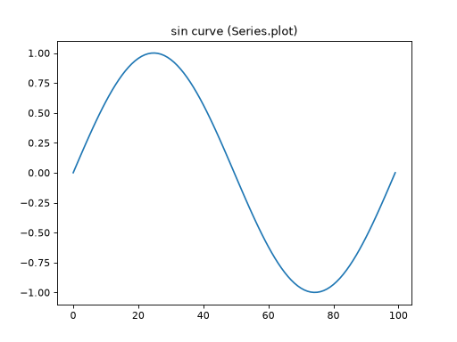
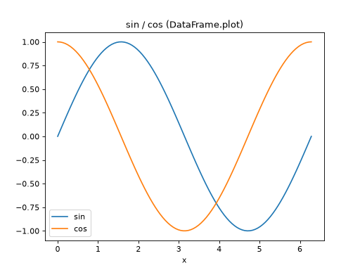
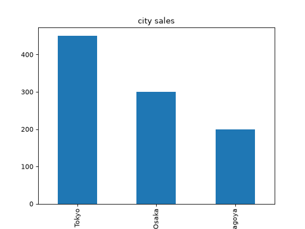
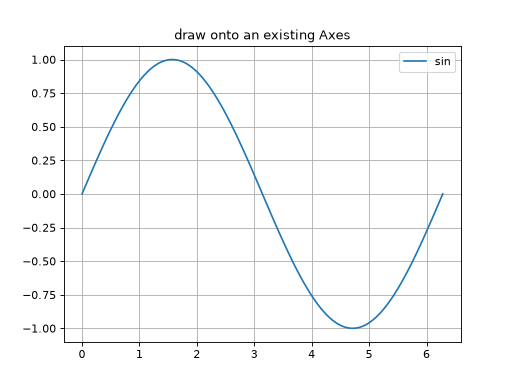

pandas との連携
pandas の DataFrame や Series には plot() メソッドが用意されており、内部で matplotlib を使って手軽にグラフを描画できます。
Series.plot
import pandas as pd
import numpy as np
from matplotlib.axes import Axes
s: pd.Series = pd.Series(np.sin(np.linspace(0, 2 * np.pi, 100)))
ax: Axes = s.plot(title="sin curve (Series.plot)")



DataFrame.plot
DataFrame の場合、既定では各列がそれぞれ 1 本の線としてプロットされます。
import pandas as pd
import numpy as np
from matplotlib.axes import Axes
x: np.ndarray = np.linspace(0, 2 * np.pi, 100)
df: pd.DataFrame = pd.DataFrame({"sin": np.sin(x), "cos": np.cos(x)}, index=x)
ax: Axes = df.plot(title="sin / cos (DataFrame.plot)")
ax.set_xlabel("x")



kind 引数でグラフの種類を指定できます。
import pandas as pd
from matplotlib.axes import Axes
df: pd.DataFrame = pd.DataFrame({
"city": ["Tokyo", "Osaka", "Nagoya"],
"sales": [450, 300, 200],
})
ax: Axes = df.plot(
x="city", y="sales", kind="bar", title="city sales", legend=False
)



kind には "line"（既定）、"bar"、"hist"、"scatter" などを指定できます。
Axes を指定して細かく制御する
ax 引数に既存の Axes を渡すことで、plt.subplots() で作成した Axes へ描画したり、装飾を後から加えたりすることもできます。
import matplotlib.pyplot as plt
import pandas as pd
import numpy as np
from matplotlib.axes import Axes
from matplotlib.figure import Figure
x: np.ndarray = np.linspace(0, 2 * np.pi, 100)
df: pd.DataFrame = pd.DataFrame({"sin": np.sin(x)}, index=x)
fig: Figure
ax: Axes
fig, ax = plt.subplots()
df.plot(ax=ax)
ax.set_title("draw onto an existing Axes")
ax.grid(True)



注釈
DataFrame.plot() は手軽にグラフを描ける反面、細かい調整をしたい場合はこれまでのページで紹介した fig, ax = plt.subplots() から ax に対して直接メソッドを呼び出す方法の方が柔軟です。まずは plot() で概要を確認し、必要に応じて matplotlib の機能で装飾する、という使い分けがおすすめです。